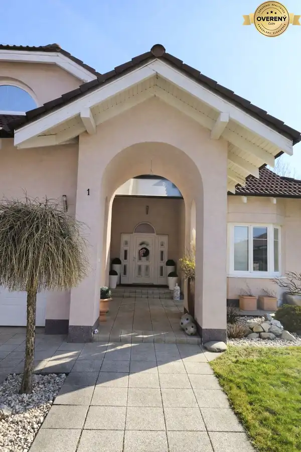
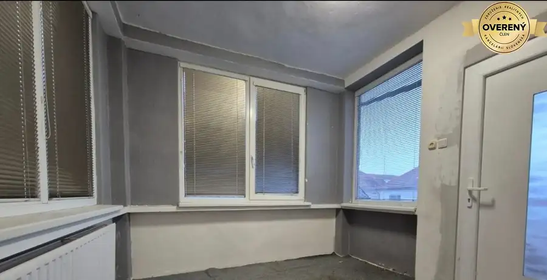
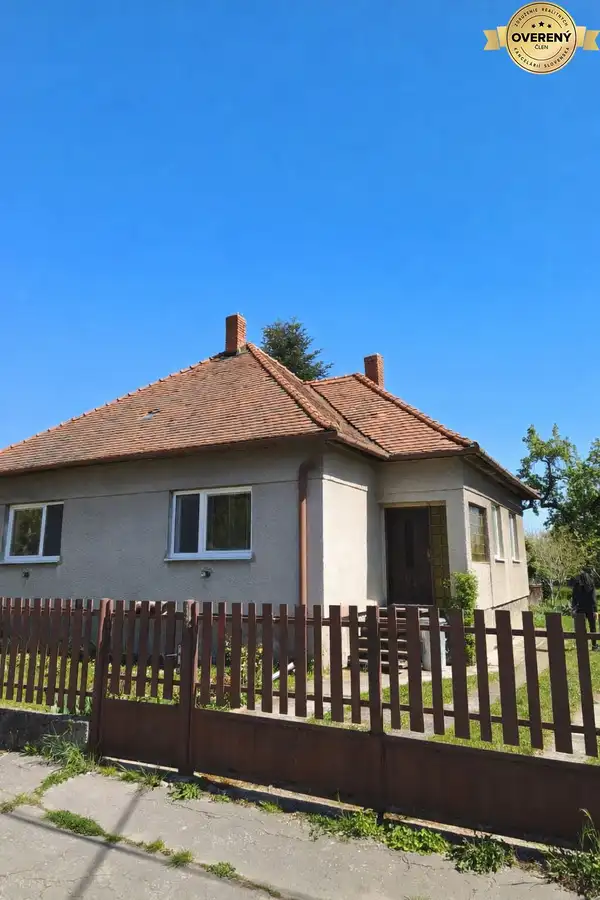

5 izbový dom Mankovce
Mankovce
- Dispozícia5-izbový
- Poschodie0. z 3
- Stavčiastočne prerobený
- Vlastníctvoosobné
O nehnuteľnosti
V exkluzívnom zastúpení majiteľov, ponúkam na predaj kompletne podpivničený dom na pozemku s veľkosťou 640m2. Tento 5 izbový kolaudovaný v roku 1987, ponúka ideálny základ pre komfortné rodinné bývanie s potenciálom ďalších úprav podľa vlastných predstáv.
Dom sa nachádza v pokojnej bočnej uličke, čo zaručuje súkromie a minimálnu premávku. Príjemným bonusom je potok na konci záhrady, ktorý dotvára atmosféru a prináša kúsok prírody priamo za vaším plotom.
Vďaka kompletnému podpivničeniu získavate veľkorysý úložný priestor, technické zázemie alebo možnosť vytvoriť si dielňu, fitness či hobby miestnosť, prípadne na podnikateľské účely.
Na 1.podlaží sa nachádza: zádverie, 2x izba, kuchyňa, samostatná toaleta a špajza.
Na poschodí sa nachádzajú 3 izby, kúpeľna, priestor na walk-in šatník.
STRECHA bola zrenovovaná pred 5 rokmi.
OKNÁ boli vymenené pred 4 rokmi
Plynový KOTOL a BOJLER v roku 2024.
VCHODOVÉ dvere sú plastové v drevodekorovomnprevedení.
Dom je napojený na KANALIZÁCIU,VEREJNY VODOVOD, PLYN AJ ELEKTRINU.
Na pozemku sa nachádza studňa a aj pôvodná ŽUMPA použiteľná na vodozádžné účely.
Dom je kúpou okamžite k dispozícii.
Obec Mankovce sa nachádza vo vzdialenosti 6 km od Zlatých Moravciec.
Občianska vybavenosť: materská škola, potraviny...
Cena 99.000,-€
Kontakt
Cena zahŕňa kompletný právny servis, vklad kúpnej zmluvy do katastra, prepisy energií a vody, podanie daňového priznania k dani z nehnuteľností pre vznik aj zánik daňovej povinnosti.
Parametre
| Poschodie | prízemie |
|---|---|
| Počet poschodí | 3 |
| Počet izieb | 5 |
| Vlastníctvo | osobné |
| Stav | čiastočne prerobený |
| Odvoz odpadu | áno - separovaný |
| Voda | verejný vodovod |
| El. napätie | 230/400V |
| Plyn | áno |
| Kanalizácia | áno |
| Kúpeľňa | vaňa |
| Vykurovanie | vlastné - plyn |
| Balkón | áno - 1 |
| Pivnica | áno |
| Garáž | nie |
| Parkovanie | vnútorné |
| Inžinierske siete | áno |
| Postavené z | tehla |
| Zateplený objekt | nie |
| Strecha | po rekonštrukcii |
| Predzáhradka | áno - 1 |
| Bezbariérový prístup | nie |
| Okná | plastové |
| Prístupová cesta | asfaltová cesta |
| Dátum zverejnenia | 4. 3. 2026 |
Kde to je
Mohlo by Vás zaujímať

Rodinné domy10 353 000 €Vila s potenciálom bývania aj podnikania Zlaté Moravce Zlaté Moravce 5-izbový990 m² Predstavujem Vám priestrannú rodinnú vilu v meste Zlaté Moravce, ktorá bola kolaudovany v roku 2003 a ponúka komfortné bývanie pre väčšiu rodinu,…
Rodinné domy8 177 000 €Dom pri parku v Zlatých Moravciach Zlaté Moravce 768 m² Ponúkam na predaj rodinný dom blízko centra Zlatých Moraviec. Stojí na pozemku s rozlohou 768 m2. Od centra mesta, supermarketov a SAD ho delí…
Rodinné domy10 128 000 €Dom k rekonštrukcii v Zlatých Moravciach Zlaté Moravce 95 m² V exkluzívnom zastúpení majiteľov ponúkam na predaj rodinný dom k rekonštrukcii podľa vlastných predstáv. Stojí na pozemku s rozlohou 13 árov ,je…